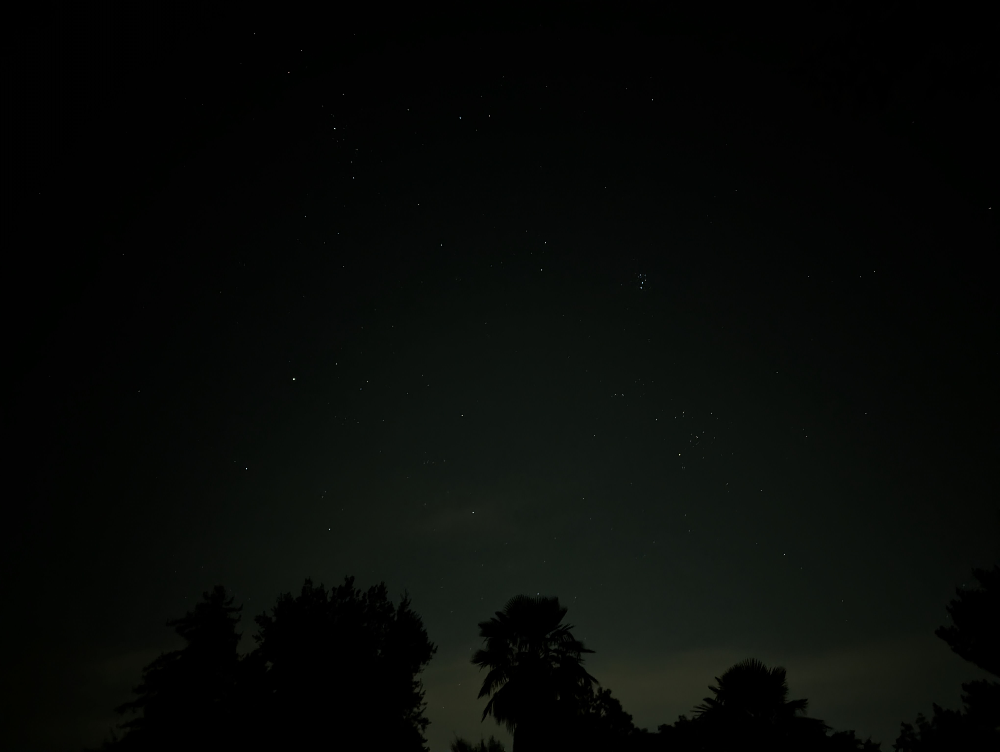

Davis
Just a random pic of a Davis sky.

Just an amateur on a journey, learning the art along the way!
Just a random pic of a Davis sky.
Pics from my trip to Yosemite. Sadly did not get to experience the night sky this time.
Even though I didn't get to see the night sky this time, the daytime views were absolutely worth the trip. Can't wait to go back!
Alviso Marina County Park is such a hidden gem in the Bay Area. The wetlands and salt ponds create this incredible landscape that's perfect for photography, especially during golden hour.


Went biking from Davis to Winters along the county roads and found some really interesting landscapes. The agricultural fields and rolling hills create these beautiful patterns.
The beauty of rural California

The contrast between the fields and the natural landscape is really striking. It's amazing how agriculture can create its own kind of art.

The feilds, barns in the westernen part of campus towards the Old Davis Roads are really beautiful. Be warned though this side is very isolated and any kind of traffic here is very sparse and also some network providers don't have a good range here. Venture at your own risk!


These places are also very good for astro photography but again this part of the city is very isolated and virtually no traffic here so please be careful and venture at your own risk
Did a beautiful hike in Palo Alto.


The bay area is a lot of things but one thing that doesn't dissapoint is the prximity to nature despite being the busy hub it is
The purple sand, the keyhole arch, and the dramatic coastline. The drive through Carmel and PCH1 is really magical!

The keyhole arch at Pfeiffer Beach

Rancho San Antonio is such a great spot for a little relaxating day out. Just a short drive from civilization.

I had gone to San Francisco for new years eve.
The iconic San Francisco
Pier 39
Golden Hour
The Golden Gate Bridge
San Francisco never gets old for photography. Every time I visit, I find new angles and perspectives to capture. The city has such a unique character!
When I first started experimenting with astrophotography, something unexpected happened, a starlink satellite passed by. My picture does not do jsustice to what I saw.


P.S. It looked like the aliens were descending.
The magical sunset I saw on a run while in Sycamore Park.

I love how the colors of the setting sun create such a pictureque scene.